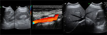

Seja Bem-Vindo!

 Raios-X Digital
Raios-X Digital
O raios-X digital, possibilita a gravação das imagens em cd/arquivo e também a manipulação delas no computador, não havendo mais a necessidade de repetir o exame.(...)
- Mamografia Digital

É o exame radiológico das mamas, feito com uma baixa dose de radiação, quase desprezível, para produzir imagens que forneçam informações sobre o interior da glândula mamária e das axilas. (...)
 Ultrassonografia GeralA ultrassonografia (ou ecografia) é um método inócuo e relativamente barato de produzir em tempo real imagens em movimento das estruturas e órgãos do interior do corpo.(...)
- Ultrassonografia Obstetrica

Sem duvida a US obstétrica atualmente é insubstituível no que se refere á avaliação do concepto e que deve ser obrigatoriamente incluída na rotina pré-natal (...)